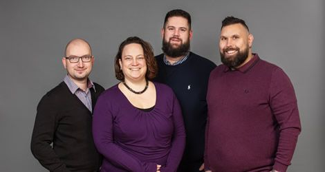
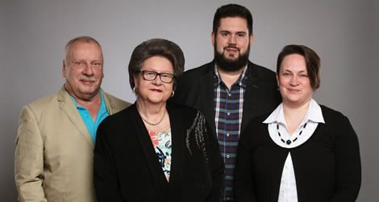

Menschen, die für Sie da sind.
Hinter Bestattungen Jakob steht ein Familienunternehmen in zweiter Generation · Alexander und Evelyn Jakob und ein eingespieltes Team, das Sie im Trauerfall wie in der Vorsorge persönlich begleitet.

Alexander und Evelyn Jakob. Verantwortung in zweiter Generation.
Alexander Jakob ist nach seiner Tätigkeit als Einzelhandelskaufmann im Jahr 2008 in das Familienunternehmen eingestiegen und hat den elterlichen Betrieb im Januar 2018 übernommen. Seine Frau Evelyn ist seit 2015 im Unternehmen tätig, nachdem sie einige Jahre in einer Anwaltskanzlei beschäftigt war.
Gemeinsam führen die beiden das Haus mit der Erfahrung von mehr als 25 Jahren Familientradition · zuverlässig, nahbar und mit einem offenen Ohr für alles, was Sie bewegt. Auch nach der Bestattung dürfen Sie jederzeit auf uns zukommen.

Sonja und Horst Jakob. Die Gründer.
Horst Jakob, gelernter Offsetdrucker, und seine Frau Sonja, ausgebildete Großhandelskauffrau, kamen 1989 über eine befreundete Familie zum Bestattungsgewerbe. 1997 machten sie sich selbständig und gründeten ihr Bestattungsinstitut in Kempten.
2018 übergaben sie den Betrieb an ihren Sohn Alexander · seit 2019 sind beide im wohlverdienten Ruhestand. Die Werte, mit denen sie das Haus aufgebaut haben, prägen unsere Arbeit bis heute.
Sie erreichen immer einen von uns.
Auch nachts, an Wochenenden und Feiertagen · Sie sprechen direkt mit uns, nicht mit einer Bandansage.
0831 52 00 20